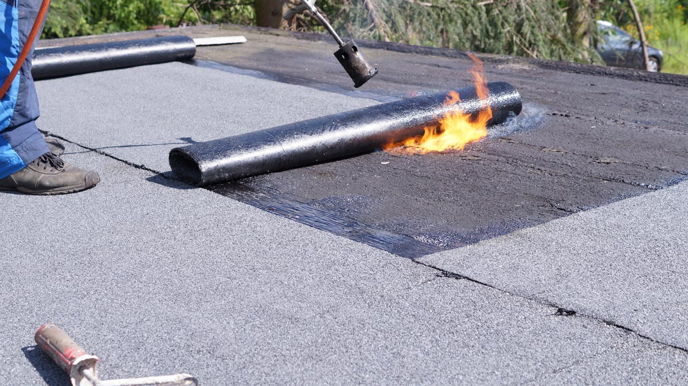

Installation, réparation et inspection de toits plats par des couvreurs certifiés. Membrane élastomère fusionnée au chalumeau pour une étanchéité absolue, garantie jusqu'à 25 ans. Soumission gratuite en 24 heures. Installation, repair and inspection of flat roofs by certified roofers. Torch-fused elastomeric membrane for absolute waterproofing, guaranteed up to 25 years. Free quote within 24 hours.
Obtenir une soumission Get a free quoteLa membrane élastomère est le revêtement de référence pour les toits plats au Québec. Composée de bitume modifié SBS (styrène-butadiène-styrène) — un caoutchouc synthétique — elle offre une élasticité et une résistance exceptionnelles aux conditions climatiques extrêmes de notre région. Contrairement aux membranes d'asphalte traditionnelles, l'élastomère conserve sa souplesse même par des températures atteignant -40°C, ce qui la rend idéale pour le climat nordique de Montréal et de Laval. Elastomeric membrane is the reference roofing material for flat roofs in Québec. Made from SBS-modified bitumen (styrene-butadiene-styrene) — a synthetic rubber — it delivers exceptional elasticity and resistance to the extreme weather conditions of our region. Unlike traditional asphalt membranes, elastomeric membrane retains its flexibility even at temperatures reaching -40°C, making it ideal for the northern climate of Montréal and Laval.
Le système se compose de deux couches distinctes fusionnées au chalumeau directement sur le pontage du toit. La couche de base agit comme pare-vapeur et couche d'adhérence, tandis que la couche de finition — dotée d'une surface granulée ou lisse — assure la protection contre les rayons UV, les intempéries et les dommages mécaniques. Cette double épaisseur crée une barrière d'étanchéité monolithique qui élimine les risques d'infiltration d'eau, même sous les charges de neige les plus lourdes. The system consists of two distinct layers torch-fused directly onto the roof deck. The base layer acts as a vapour barrier and bonding layer, while the cap sheet — featuring a granulated or smooth surface — provides protection against UV rays, weather and mechanical damage. This double thickness creates a monolithic waterproofing barrier that eliminates the risk of water infiltration, even under the heaviest snow loads.
Chez Toitex, nous installons exclusivement des membranes élastomères certifiées de fabricants canadiens reconnus, appliquées selon les normes les plus strictes de l'industrie. Chaque installation est réalisée par des couvreurs d'expérience, formés spécifiquement à la pose au chalumeau, et couverte par une garantie complète sur les matériaux et la main-d'œuvre. At Toitex, we exclusively install certified elastomeric membranes from recognized Canadian manufacturers, applied according to the strictest industry standards. Every installation is carried out by experienced roofers specifically trained in torch application, and covered by a comprehensive warranty on both materials and workmanship.

Six raisons qui en font le choix le plus fiable pour les toitures plates résidentielles et commerciales dans le Grand Montréal. Six reasons why it is the most reliable choice for residential and commercial flat roofs in Greater Montréal.
Nous évaluons vos besoins par téléphone ou en personne, puis nous vous transmettons une soumission détaillée et transparente sous 24 heures. Aucun frais caché, aucune obligation. Nous expliquons chaque poste de la soumission pour que vous compreniez exactement ce qui est inclus dans les travaux. We assess your needs by phone or in person, then deliver a detailed, transparent quote within 24 hours. No hidden fees, no obligation. We explain every line item so you understand exactly what is included in the work.
Avant tout travail, un couvreur certifié inspecte votre toiture en détail : état du pontage, isolation existante, drainage, ventilation et signes de dommages structurels. Cette inspection nous permet de recommander la meilleure approche — réparation localisée ou remplacement complet — et d'éviter les mauvaises surprises en cours de chantier. Before any work begins, a certified roofer inspects your roof in detail: deck condition, existing insulation, drainage, ventilation and signs of structural damage. This inspection lets us recommend the best approach — localized repair or full replacement — and avoid surprises during the project.
Nos équipes préparent le pontage, posent le pare-vapeur et l'isolation si nécessaire, puis fusionnent les deux couches de membrane élastomère au chalumeau. Chaque joint est inspecté visuellement et par test d'étanchéité. Les solins, les cols de ventilation et les drains sont traités avec une attention particulière pour garantir une étanchéité parfaite à chaque détail. Our crews prepare the deck, install vapour barrier and insulation if needed, then torch-fuse the two layers of elastomeric membrane. Every seam is visually inspected and leak-tested. Flashings, vent collars and drains receive special attention to ensure perfect waterproofing at every detail.
Après l'installation, un contrôle qualité final est effectué pour vérifier chaque détail. Nous photographions l'ensemble des travaux et vous remettons un rapport complet. Votre nouvelle toiture est protégée par notre garantie sur la main-d'œuvre et celle du fabricant sur les matériaux — pour une tranquillité d'esprit totale pendant des décennies. After installation, a final quality check verifies every detail. We photograph all work and provide a complete report. Your new roof is protected by our workmanship warranty and the manufacturer's material warranty — for total peace of mind for decades to come.
Durée de vie : 25 à 40 ans. La membrane élastomère est le choix par excellence au Québec. Sa base de caoutchouc SBS lui confère une flexibilité inégalée par temps froid, résistant aux cycles gel-dégel sans fissurer. Fusionnée au chalumeau en deux couches, elle forme une barrière d'étanchéité continue et sans joint mécanique. Excellente résistance aux UV grâce à sa surface granulée. C'est le système le plus éprouvé pour les hivers rigoureux et les toitures avec une pente minimale. Disponible en plusieurs couleurs dont le blanc réfléchissant pour les bâtiments commerciaux. Lifespan: 25 to 40 years. Elastomeric membrane is the go-to choice in Québec. Its SBS rubber base provides unmatched cold-weather flexibility, withstanding freeze-thaw cycles without cracking. Torch-fused in two layers, it forms a continuous waterproofing barrier with no mechanical seams. Excellent UV resistance thanks to its granulated surface. It is the most proven system for harsh winters and roofs with minimal slope. Available in several colors including reflective white for commercial buildings.
Durée de vie : 15 à 25 ans. Le TPO est une membrane thermoplastique monocouche soudée à l'air chaud. Populaire en toiture commerciale grâce à sa surface blanche hautement réfléchissante et son coût initial plus bas. Cependant, il est moins performant en climat nordique que l'élastomère : sa rigidité augmente par grand froid, ce qui peut provoquer des fissures au niveau des joints soudés. Les réparations sont plus complexes et nécessitent un équipement spécialisé. Convient mieux aux toitures commerciales de grande surface dans les régions à hivers modérés. Lifespan: 15 to 25 years. TPO is a single-ply thermoplastic membrane welded with hot air. Popular in commercial roofing for its highly reflective white surface and lower initial cost. However, it performs less well in northern climates than elastomeric: its rigidity increases in extreme cold, which can cause cracking at welded seams. Repairs are more complex and require specialized equipment. Better suited for large-surface commercial roofs in regions with milder winters.
Durée de vie : 20 à 30 ans. L'EPDM est une membrane de caoutchouc synthétique monocouche, posée mécaniquement ou collée. Sa flexibilité par temps froid est bonne, mais inférieure à l'élastomère SBS. Le principal inconvénient réside dans ses joints mécaniques : les adhésifs et rubans de scellement peuvent se dégrader avec le temps, créant des points faibles d'infiltration. La surface noire absorbe la chaleur, ce qui augmente les coûts de climatisation en été. Moins courant au Québec que l'élastomère, mais reste une option viable pour certaines applications commerciales et industrielles. Lifespan: 20 to 30 years. EPDM is a single-ply synthetic rubber membrane, mechanically fastened or adhered. Its cold-weather flexibility is good but inferior to SBS elastomeric. The main drawback lies in its mechanical seams: adhesives and seam tape can degrade over time, creating weak points for infiltration. The black surface absorbs heat, increasing cooling costs in summer. Less common in Québec than elastomeric but remains a viable option for certain commercial and industrial applications.
Tout ce que vous devez savoir avant d'investir dans une toiture plate en membrane élastomère. Everything you need to know before investing in an elastomeric membrane flat roof.